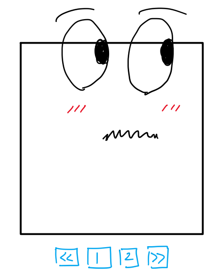

JavaScript Table

Recently, I decided to make a website to practice my HTML/CSS/JavaScript. I picked up a css template online and it was looking pretty good. But then I realized it would probably suck to have to manually edit the recent works section every time I made a new project. That's when I decided to make a "dynamic" table using JS!
Then, using my ingenious strategy, I googled how to do it. I set up the table so that it displays the contents of a constant I defined in table.js. This kind of sucks but it was the only way I knew worked with static websites like GitHub Pages. Then, I made the page buttons by doing a bunch of math.
From this project, I learned how to use JavaScript to interact with HTML (previously I used something called p5 JavaScript that didn't have anything to do with HTML). It also inspired me to look into deploying this website with React with a dynamic setup.
Check out the source code on github in assets/js/table.js.